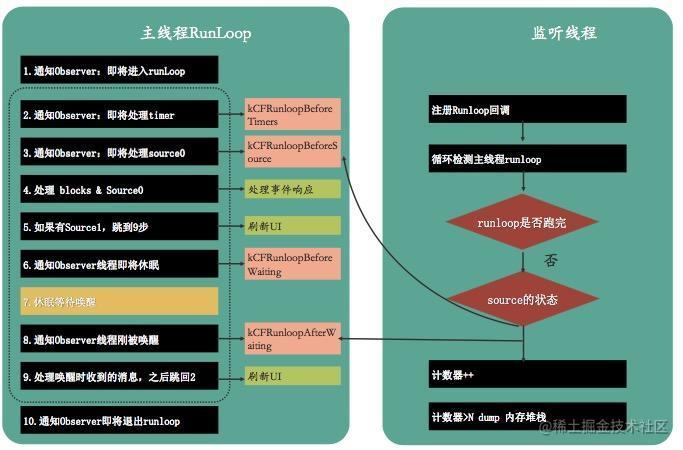
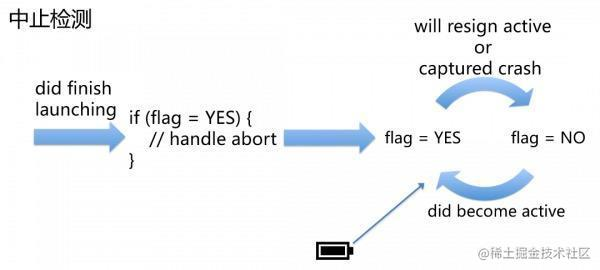
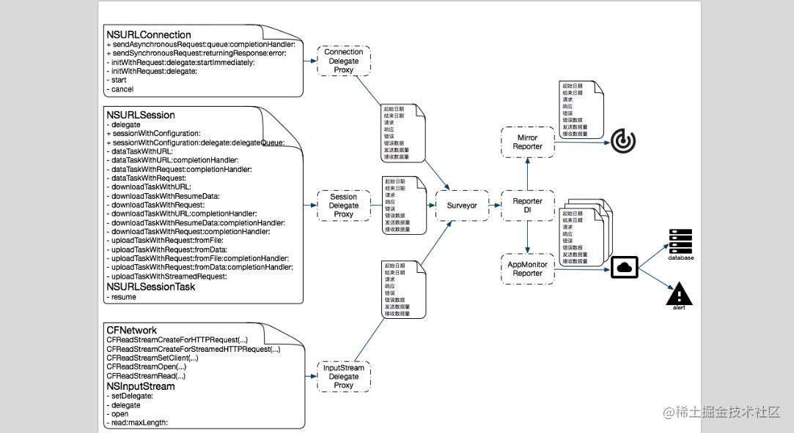

本文为转载：
作者：Joy_xx
链接：https://juejin.cn/post/6844903498383900680
来源：稀土掘金
在这样一个注重用户体验的时代，APM 技术快速发展，国内更是百花齐放，最近对各个公司的 APM 产品有一个调研，并在此基础上进行了自己的实践。这里就从 iOS 的角度出发，谈谈自己对移动端 APM 的技术上的理解，并提供相对应的实例。
何为 APM
APM 的全称是Application performance management，即应用性能管理，通过对应用的可靠性、稳定性等方面的监控，进而达到可以快速修复问题、提高用户体验的目的。
国内各大公司都有自己的一套监控体系，这个系统可能是自己研发，也可能是第三方提供，当然对于这个数据为王的时代，很多有实力的公司倾向于自主研发，掌握核心数据。比较有代表性的 APM 产品有：听云、阿里百川、腾讯 bugly、NewRelic、OneAPM、网易云捕等
说到监控，那么指标是我们所关注的呢？如下所示
- 网络请求：成功率、状态码、流量、网络响应时间、HTTP与HTTPS的 DNS 解析、TCP握手、SSL握手（HTTP除外）、首包时间等时间
- 界面卡顿、卡顿堆栈
- 崩溃率、崩溃堆栈
- Abort 率：也就是由于内存过高的等原因，被系统杀死的情况
- 交互监控：页面加载时间、页面的交互痕迹
- 维度信息：地域、运营商、网络接入方式、操作系统、应用版本等
- 其他：内存、帧率、CPU使用率、启动时间、电量等
聊聊原理
卡顿检测
当应用发生卡顿的时候，一般会伴随着掉帧，所以帧率是最容易想到的指标来判断卡顿。对于线下的测试环境，我们可以使用帧率来对开发做一些提示，告诉他们可能发生了卡顿。但是帧率不稳定性较高，所以一般会采取另一种方式来做卡顿检测。那就是Runloop，对于细节可以查看 Runloop 源码，会发现对于事件的处理主要就是在kCFRunLoopBeforeSources和kCFRunLoopBeforeWaiting状态之间,还有kCFRunLoopAfterWaiting之后。那我们就可以对两个状态进行监控，如果消耗时间太久，就代表着卡顿的发生。

上图摘自阿里百川，如图所示，我们会对卡顿次数做一个判断，如果次数为1，但时间超时，则为单次耗时较长的卡顿，如果次数到达阀值，则证明是连续短时间卡顿。
当卡顿发生之后，我们为了定位，会收集当时的一个堆栈情况，在此你可以使用 PLCrashReporter 来做，也可以自己研发一个堆栈收集库（可参考这里来做）
对于实例，网上已经有很多开源的项目，你可以参考这个
崩溃检测
对于崩溃的情况，一般是由 Mach异常或 Objective-C 异常（NSException）引起的。我们可以针对这两种情况抓取对应的 Crash 事件。
Mach 异常捕获
如果想要做mach 异常捕获，需要注册一个异常端口，这个异常端口会对当前任务的所有线程有效，如果想要针对单个线程，可以通过 thread_set_exception_ports注册自己的异常端口，发生异常时，首先会将异常抛给线程的异常端口，然后尝试抛给任务的异常端口，当我们捕获异常时，就可以做一些自己的工作，比如，当前堆栈收集等。
对于如何注册一个异常端口，这里有示意图和 PLCrashReporter 可以参考
Unix 信号捕获
对于Mach 异常，操作系统会将其转换为对应的 Unix信号，所以如果你对Mach不熟悉的话，也可以通过注册signalHandler的方式来做信号异常。对于实例，你可以参考这里
1 | signal(SIGHUP, signalHandler); |
NSException 捕获
对于NSException异常，也比较容易处理，通过注册NSUncaughtExceptionHandler捕获异常信息即可，将拿到的NSException细节写入Crash日志，上传到后台做数据分析
1 | // register the uncaught exception handler |
Abort 率检测
目前对于内存过高被杀死的情况是没有办法直接统计的，一般通过排除法来做百分比的统计，原理如下
- 程序启动，设置标志位
- 程序正常退出，清楚标志
- 程序
Crash，清楚标志 - 程序电量过低导致关机，这个也没办法直接监控，可以加入电量检测来辅助判断
- 第二次启动，标志位如果存在，则代表
Abort一次，上传后台做统计

交互监控
对于页面的加载时间，这个比较容易实现，直接通过Runtime hook对应的生命周期方法即可，比如 viewDidLoad、viewWillAppear等
对于用户的交互痕迹，比如点击了那个按钮、跳转到了那个页面，这些信息偏于用户行为的收集，我们也独立研发了一个无埋点的SDK，专门来做用户行为数据的收集与分析，核心也是基于 hook AOP的思想。细节可以参考我同事的作品
网络监控
对于成功率、状态码、流量，以及网络的响应时间之类的，我们可以主要可以通过两种方式来做
- 针对
URLConnection、CFNetwork、NSURLSession三种网络做Hook，hook的具体技术可以是method swizzle也可以是Proxy、Fishhook之类的 - 也可以使用
NSURLProtocol对网络请求的拦截，进而得到流量、响应时间等信息，但是NSURLProtocol有自己的局限，比如NSURLProtocol只能拦截NSURLSession，NSURLConnection以及UIWebView，但是对于CFNetwork则无能为力
对于第一种方式可以Hook哪些方法的，可以参考这个图

但是，因为我们所使用的URLConnection、CFNetwork、NSURLSession底层都是 BSDSocket，所以可以尝试在socket上动手脚来实现效果，类似于通过ViewController的生命周期方法来统计页面加载时间的做法，我们Hook socket相关的方法来做，比如通过hook socket连接时的 connect方法，拿到tcp握手的起始时间，通过hook SSLHandshake方法，在SSLHandshake执行的时候拿到 SSL握手的起始时间等。目前听云已经提供了 HTTP 的分段时间查询功能，大家去体验下
1 | int connect(int, const struct sockaddr *, socklen_t) __DARWIN_ALIAS_C(connect); |
但是对于 iOS 9 Apple 加入 ATS 新特性，并要求开发者使用 HTTPS，我在 iOS9、10上对 HTTPS 网络请求Hook socket方法时候，有一些方法hook 失效，猜想应该是Apple 进行了加固、加密，导致一些系统方法没办法hook，所以在 iOS9、10 上无法通过socket来取得HTTPS网络的分段时间（纠正：fishhook 无法 hook socket 的原因：https://github.com/facebook/fishhook/issues/40）
不过apple在 iOS 10 推出一个API，可以在 iOS10 版本以上进行网络信息的收集
1 | - (void)URLSession:(NSURLSession *)session task:(NSURLSessionTask *)task didFinishCollectingMetrics:(NSURLSessionTaskMetrics *)metrics |
打印结果如下
1 | (Fetch Start) 2017-02-24 09:03:06 +0000 |
当然，对于网络各层次的时间获取，如果你有好的方案，希望您可以留言告知。同时对于一些维度信息和内存等基础指标，很容易获取，这里就不细谈了
大礼包
在调研和学习APM技术的过程中，发现了很多优秀的博客，所以在此推荐给大家，有需要的可以自取